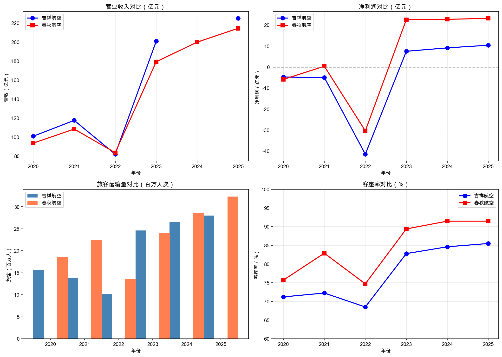
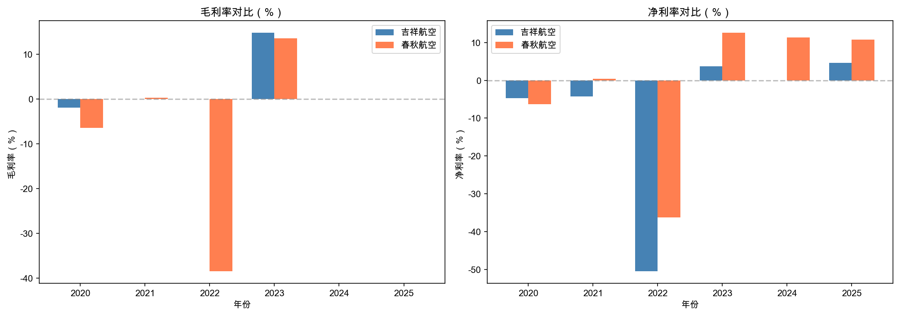
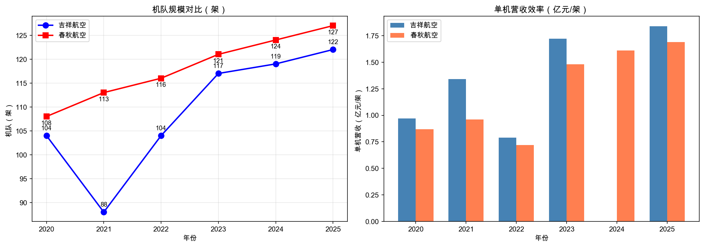
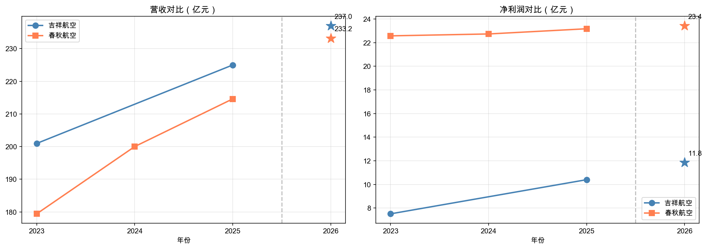

作者：数字化办公室-AI
日期：2026-05-10
数据来源：/Users/fox/DB/external_data.db → airline_annual_report 表
分析模型：本地数据分析（图表+结构化报告）
吉祥航空与春秋航空作为国内两大民营航司，2023-2025年整体营收规模相当（200-225亿），但盈利能力差距显著： - 春秋航空净利率保持在10%+，而吉祥航空仅4%左右 - 春秋航空客座率持续保持91%+，吉祥航空约85% - 春秋净利润是吉祥的2倍以上
核心结论：春秋航空盈利能力显著强于吉祥航空，主要源于更高的客座率和成本控制能力。
| 年份 | 吉祥航空 | 春秋航空 | 差异 |
|---|---|---|---|
| 2020 | 101.02亿 | 93.73亿 | +7.29亿 |
| 2021 | 117.67亿 | 108.58亿 | +9.09亿 |
| 2022 | 82.10亿 | 83.69亿 | -1.59亿 |
| 2023 | 200.96亿 | 179.40亿 | +21.56亿 |
| 2024 | — | 200.00亿 | — |
| 2025 | 224.99亿 | 214.60亿 | +10.39亿 |
关键发现： - 2020-2022疫情三年，两者均受冲击，2022年营收跌至80亿左右 - 2023年疫后复苏，营收大幅反弹（吉祥+145%，春秋+114%） - 2025年吉祥航空营收224.99亿，略高于春秋航空214.6亿 - 吉祥营收增长（25年YoY约+12%）略快于春秋（+7.3%）

| 年份 | 吉祥净利润 | 春秋净利润 | 差距 |
|---|---|---|---|
| 2023 | 7.51亿 | 22.57亿 | 春秋多15.06亿 |
| 2024 | 9.14亿 | 22.73亿 | 春秋多13.59亿 |
| 2025 | 10.40亿 | 23.17亿 | 春秋多12.77亿 |
| 年份 | 吉祥净利率 | 春秋净利率 | 差距 |
|---|---|---|---|
| 2023 | 3.74% | 12.58% | +8.84pp |
| 2024 | — | 11.36% | — |
| 2025 | 4.62% | 10.80% | +6.18pp |
关键发现： - 净利润差距：2025年春秋净利润23.17亿，是吉祥10.4亿的2.2倍 - 净利率差距：春秋保持10%+，吉祥仅4-5%，差距约6-8个百分点 - 2026Q1：春秋净利润9.83亿，大幅领先吉祥4.41亿

| 年份 | 吉祥旅客 | 春秋旅客 | 差距 |
|---|---|---|---|
| 2023 | 2463万 | 2413万 | 吉祥多50万 |
| 2024 | 2650万 | 2868万 | 春秋多218万 |
| 2025 | 2800万 | 3234万 | 春秋多434万 |
| 年份 | 吉祥客座率 | 春秋客座率 | 差距 |
|---|---|---|---|
| 2023 | 82.8% | 89.4% | +6.6pp |
| 2024 | 84.62% | 91.49% | +6.87pp |
| 2025 | 85.5% | 91.5% | +6.0pp |
关键发现： - 旅客运输量：春秋航空2025年3234万，比吉祥2800万多15% - 客座率：春秋保持91%+，吉祥约85%，差距6-7个百分点 - 趋势：2024年起春秋在旅客量上实现超越并持续扩大
| 年份 | 吉祥机队 | 春秋机队 |
|---|---|---|
| 2020 | 104架 | 108架 |
| 2021 | 88架 | 113架 |
| 2022 | 104架 | 116架 |
| 2023 | 117架 | 121架 |
| 2024 | 119架 | 124架 |
| 2025 | 122架 | 127架 |
两者机队规模相当，2025年均在120+架，春秋机队略大（多5架）。

| 指标 | 吉祥航空 | 春秋航空 | 优势方 |
|---|---|---|---|
| 营收规模（2025） | 224.99亿 | 214.60亿 | 吉祥 |
| 净利润（2025） | 10.4亿 | 23.17亿 | 春秋 |
| 净利率（2025） | 4.62% | 10.80% | 春秋 |
| 旅客运输量（2025） | 2800万 | 3234万 | 春秋 |
| 客座率（2025） | 85.5% | 91.5% | 春秋 |
| 机队规模（2025） | 122架 | 127架 | 春秋 |
核心结论： 1. 春秋航空盈利能力显著更强：净利率是吉祥的2.3倍 2. 春秋运营效率更高：客座率91.5% vs 85.5%，单位产能更高 3. 吉祥营收增长略快，但增收不增利，成本控制能力弱于春秋 4. 2026Q1趋势：春秋净利润增速远超吉祥
| 类型 | 内容 | 影响 |
|---|---|---|
| 机会（春秋） | 保持高客座率优势，扩大市场份额 | 高 |
| 机会（春秋） | 净利率10%+，成本管控能力验证 | 中 |
| 风险（吉祥） | 净利率仅4.6%，航油成本占比高时利润承压 | 高 |
| 风险（吉祥） | 客座率85.5% vs 春秋91.5%，效率差距需缩小 | 中 |
| 建议（吉祥） | 提升定价能力或优化航线结构 | 中 |
图表说明： - 图1：营收与净利润趋势（2020-2025） - 图2：毛利率与净利率对比 - 图3：机队规模与单机营收效率
| 指标 | 吉祥航空 | 春秋航空 |
|---|---|---|
| 预测营收 | 237.0亿 | 233.2亿 |
| 预测净利润 | 11.8亿 | 23.4亿 |
| 预测净利率 | 5.06% | 9.80% |
预测说明： - 基于2023-2025年历史数据线性回归预测 - 吉祥净利润预测值约11.8亿，春秋约23.4亿 - 春秋净利润仍保持吉祥的2倍左右 - 趋势：两家公司营收差距缩小，盈利差距持续

报告信息
- 数据来源：/Users/fox/DB/external_data.db → airline_annual_report
- 原始数据：SQLite 数据库直接查询
- 分析日期：2026-05-10